library(tidyverse) # Dit laadt ggplot2, waarmee we de grafieken maken
library(scales) # Dit laadt scales
library(openintro) # We maken gebruik van data uit het package openintro8 Grafieken maken met ggplot2
Het package ggplot2 biedt de meest consistente en flexibele manier om grafieken te maken in R. We zullen ons concentreren op de basisgrafiektypes aan de hand van voorbeelden. Dit is wat we verwachten dat je in staat bent om te doen.
Meer gedetailleerde opties zijn te vinden op de ggplot2 website en cheat sheet, maar dit is geen examenstof.
We gebruiken ook het package scales. Dit package geeft ons extra opties voor transformaties en om de labels, en kleurpaletten aan te passen.
We laden de benodigde packages als volgt:
8.1 Algemene inleiding tot ggplot
Plots met ggplot 2 worden ontworpen in lagen (layers).
Elke ggplot begint met de ggplot functie, waarin je de dataset definieert die wordt gebruikt en de belangrijkste variabelen. Bijvoorbeeld in de grafiek hieronder definiëren we loan50 als de data . Vervolgens koppelen (“mapping”) we de variabelen die we gebruiken met behulp van de aes functie, die variabelen koppelt aan elementen van de grafiek. In onderstaand voorbeeld geven we aan dat we de variabele total_income op de x-as willen gebruiken en loan_amount op de y-as.
data(loan50) # Hiermee laden we de dataset loan50 van openintro
ggplot(data = loan50,
mapping = aes(x = total_income, y = loan_amount))
De bovenstaande code produceert een ‘lege’ grafiek, omdat we R nog niet hebben verteld wat voor soort grafiek we willen produceren: misschien een lijngrafiek, een puntenwolk of iets anders? We moeten een geom-laag aan de grafiek toevoegen om punten, lijnen of balken in de grafiek te kunnen produceren. Hieronder voegen we punten toe aan de grafiek met geom_point(). Merk op dat we ook een plusteken (+) toevoegen na de tweede regel, die ervoor zorgt dat we de punten toevoegen aan onze grafiek:
ggplot(data = loan50,
mapping = aes(x = total_income, y = loan_amount)) +
geom_point()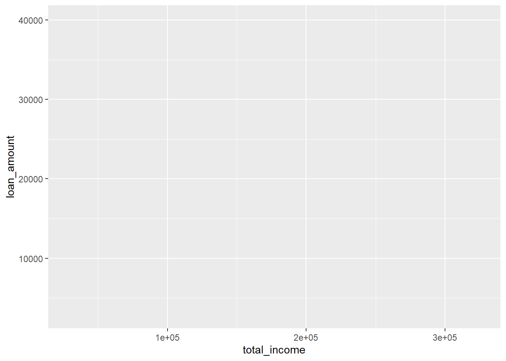
We kunnen ook extra lagen toevoegen om de grafiek er anders uit te laten zien, labels te veranderen of andere elementen aan de grafiek toe te voegen. Voorbeelden hiervan vind je voor elk van de grafiektypes hieronder.
8.1.1 Een ggplot opslaan in een bestand
Als je een grafiek wilt gebruiken in bijvoorbeeld een Word-document of Powerpoint, kun je de ggplot exporteren met ggsave. Dit slaat de laatste ggplot op in een bestand:
ggplot(data = loan50,
mapping = aes(x = total_income, y = loan_amount)) +
geom_point()
ggsave(filename = "scatterplot_example.png",
width=7,
height=7)filename = "scatterplot_example.png"-
Je moet het bestand een naam en een extensie geven. In dit voorbeeld is de bestandsnaam ingesteld op
scatterplot_example.png. Dit maakt een PNG-bestand, wat vaak goed werkt als je de grafiek wilt gebruiken in een tekstdocument of presentatie. Je kunt ook andere bestandsformaten maken, zoals eenjpegofpdfbestand, door de extensie te veranderen, bijvoorbeeldscatterplot_example.pdf. width = 7-
Dit geeft de breedte van de grafiek in inches.
height = 7-
Geeft de hoogte van de grafiek in inches.
8.2 Puntenwolk (scatterplot)
Een puntenwolk geeft een overzicht van elk uniek punt voor twee numerieke waarden. Dit werkt vooral goed als er veel unieke waarden zijn.
In het onderstaande voorbeeld zetten we total_income op de x-as (horizontaal) en loan_amount op de y-as (verticaal).
data(loan50) # This loads the dataset loan50 from openintro
ggplot(data = loan50,
mapping = aes(x = total_income, y = loan_amount)) +
geom_point()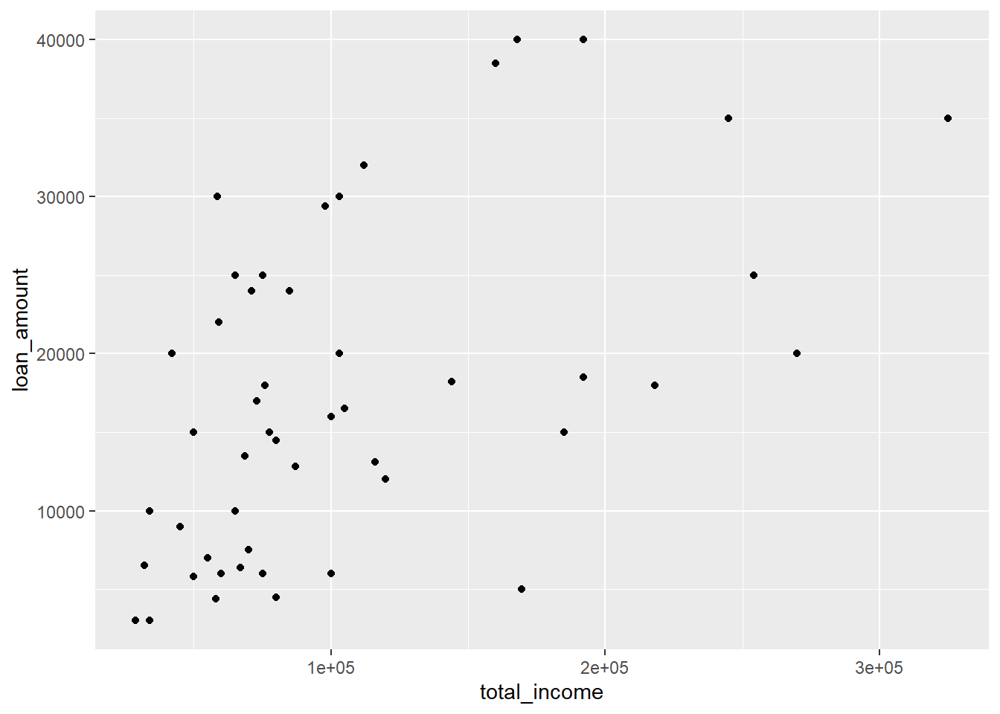
data = loan50-
Dit stukje code zegt dat het dataframe dat we gebruiken
loan50heet. Voor je eigen grafiek zou jeloan50vervangen door de naam van het data.frame dat je gebruikt. mapping = aes(x = total_income, y = loan_amount)-
Dit deel van de code geeft aan dat
total_incomede variabele is die we willen weergeven op de x-as enloan_amountmoet worden weergegeven op de y-as. Voor je eigen grafiek zou je dustotal_incomeenloan_amountvervangen door je eigen variabelen. geom_point()-
Dit vertelt ggplot2 dat we een scatterplot willen maken met punten voor de twee variabelen. We hebben geen extra argumenten nodig voor een eenvoudige scatterplot.
8.2.1 Puntenwolk: extra opties
Om de scatterplot er wat mooier uit te laten zien, kunnen we extra opties toevoegen. Om opties aan een plot toe te voegen gebruiken we het + teken aan het eind van de regel:
data(loan50)
ggplot(data = loan50,
mapping = aes(x = total_income, y = loan_amount)) +
geom_point(size=2, colour = "grey") +
labs(title = "Total income and loan amount",
x = "Total Income",
y = "Loan Amount") +
scale_x_continuous(labels=label_dollar()) +
scale_y_continuous(labels=label_dollar()) +
theme_minimal()geom_point(size = 2, colour = "grey")-
Met deze opties kunnen we de grootte en de kleur van de stippen instellen. Merk op dat de kleurnaam een character vector is en tussen aanhalingstekens moet worden geplaatst: “grey”.
labs(title = "Title", x = "x axis title", y = "y axis title")-
Deze optie voegt mooiere namen toe voor de titel van de grafiek, en de titels van de x- en y-as.
scale_x_continuous(labels=scales::label_dollar())-
Deze optie en haar ‘zusje’
scale_y_continuousveranderen hoe de waarden en assen worden weergegeven. In dit geval willen we de waarden in dollars weergeven. Dit kan worden gedaan metlabel_dollar()uit packagescales. theme_minimal()-
Om het uiterlijk van een grafiek te veranderen, kun je de
theme_*functies gebruiken (waarbij je in plaats van ster verschillende opties kunt toevoegen, zoalstheme_minimal(),theme_classic()oftheme_light().
8.2.2 Puntenwolk: meerdere groepen
Soms heb je verschillende groepen in je gegevens die je zou willen visualiseren. In dat geval kan je geom_point aanpassen om de kleur of de vorm van de punten per groep te veranderen. In dit voorbeeld zal de kleur van de punt aangeven om wat voor type huiseigenaar het gaat:
data(loan50)
ggplot(data = loan50,
mapping = aes(x = total_income, y = loan_amount)) +
geom_point(aes(colour = homeownership)) 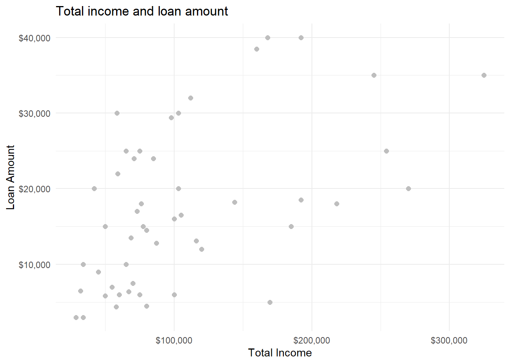
geom_point(aes(colour = homeownership))-
Dit geeft aan dat de
kleurvan de punten zal variëren per categorie vanhomeownership(huur, hypotheek, eigen huis). R zal automatisch een kleur (colour) kiezen voor elke groep. Voor je eigen grafiek, zou jehomeownershipveranderen in je eigen groeperingsvariabele. Opmerking: vergeet niet omcolour = homeownershipinaes()te zetten.
data(loan50)
ggplot(data = loan50,
mapping = aes(x = total_income, y = loan_amount)) +
geom_point(aes(shape = homeownership)) 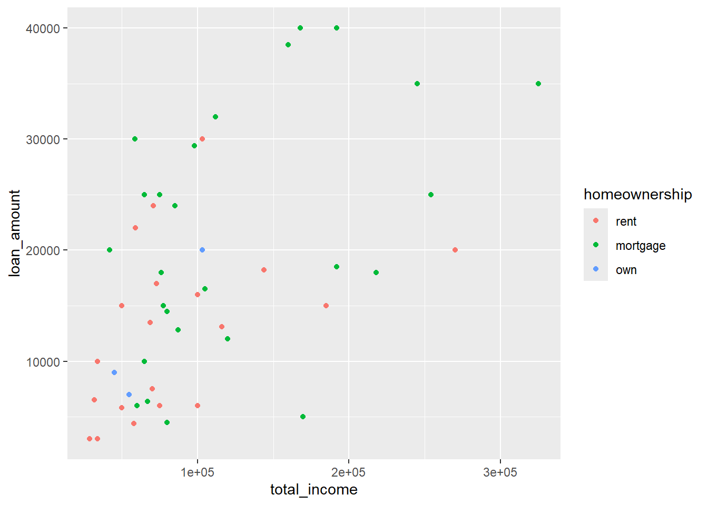
geom_point(aes(shape = homeownership))-
Dit geeft aan dat de vorm (
shape) van de punten zal variëren per categorie vanhomeownership. R zal automatisch eenshapekiezen voor elke groep. Voor uw eigen grafiek, zou uhomeownershipveranderen in uw eigen groeperingsvariabele. Opmerking: vergeet niet omshape = homeownershipinaes()te zetten.
8.2.3 Puntenwolk: afzonderlijke grafieken per groep
Soms wil je, in plaats van verschillende kleuren of vormen voor een groep te gebruiken, een aparte grafiek voor elke groep maken. Deze worden “facetten” (facets) genoemd en kunnen als volgt worden gemaakt:
data(loan50)
ggplot(data = loan50,
mapping = aes(x = total_income, y = loan_amount)) +
geom_point() +
facet_wrap(vars(homeownership))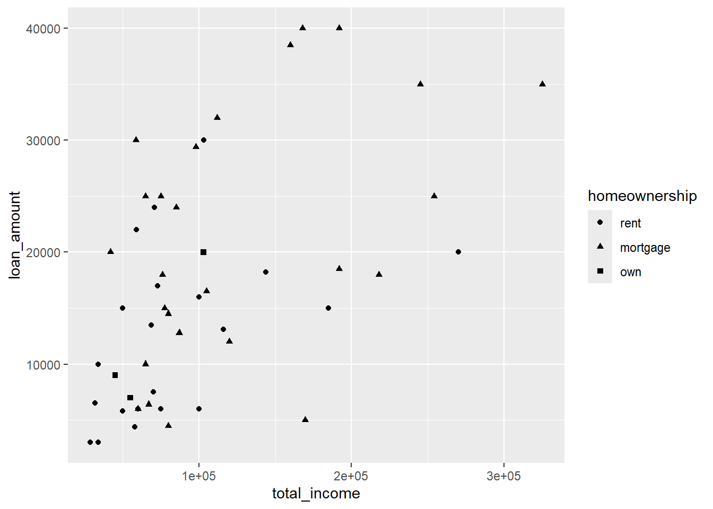
facet_wrap(vars(homeownership))-
Dit geeft aan dat we een apart “facet” willen produceren voor elke waarde van
woningbezit(huur, hypotheek, eigen). Voor uw eigen grafiek, zou uhomeownershipveranderen in uw eigen groeperingsvariabele. Opmerking: vergeet niet om de variabele naam invars()te zetten. Er zijn extra opties voor de functiefacet_wrapom te bepalen hoe deze worden weergegeven, bijvoorbeeld het aantal rijen (nrow) en kolommen (ncol).
8.3 Dot plot
Een dot plot vat de waarden voor een enkele variabele samen.
data(loan50)
ggplot(data = loan50,
mapping = aes(x = interest_rate)) +
geom_dotplot()Bin width defaults to 1/30 of the range of the data. Pick better value with
`binwidth`.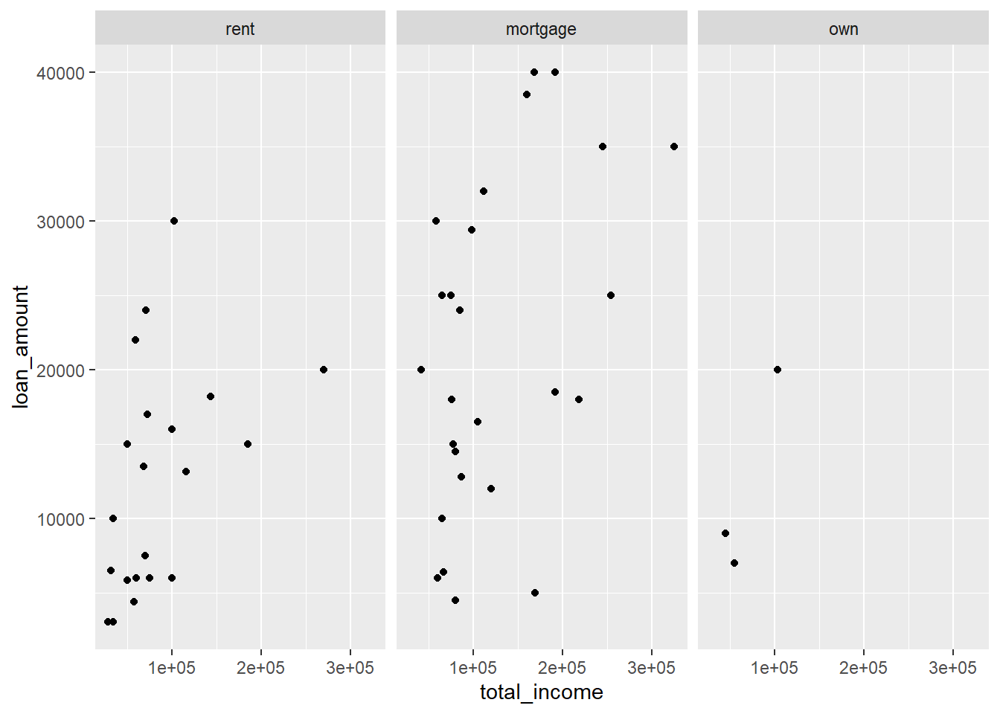
data = loan50-
Dit stukje code zegt dat het dataframe dat we gebruiken
loan50heet. Voor je eigen grafiek zou jeloan50vervangen door de naam van het data.frame dat je gebruikt. mapping = aes(x = interest_rate)-
Dit deel van de code zegt dat
interest_ratede variabele is die we willen weergeven. Voor je eigen grafiek zou je dusinterest_ratevervangen door je eigen variabele. geom_dotplot()-
Dit vertelt ggplot2 dat we een dotplot willen maken. We hebben geen bijkomende opties nodig voor een basis dotplot.
8.3.1 Dot plot: extra opties
data(loan50)
ggplot(data = loan50,
mapping = aes(x = interest_rate)) +
geom_dotplot() +
labs(title = "Dot plot of interest rate",
x = "Interest rate",
y = "") +
scale_y_continuous(labels=NULL) +
scale_x_continuous(labels = label_percent(scale=1),
breaks=seq(5,25,by=5)) +
theme_minimal()Bin width defaults to 1/30 of the range of the data. Pick better value with
`binwidth`.labs(title = "Title", x = "x axis title", y = "")-
Deze optie voegt mooiere namen toe voor de titel van de grafiek, en de titels van de x- en y-as. In het voorbeeld verwijderen we de titel van de y-as door hem op niets te zetten (
"") scale_x_continuous(labels = label_percent(scale=1), breaks=seq(5,25,by=5)-
Deze optie verandert hoe de x-as wordt weergegeven. In dit geval willen we de waarden in percentages weergeven. Dit kan gedaan worden met
label_percent(scale = 1)uit packagescales. We stellen ookbreaks=seq(5,25, by=5)in om R te vertellen dat we de waarden van de x-as willen weergeven op 5%, 10%, 15%, 20% en 25%. theme_minimal()-
Om het uiterlijk van een grafiek te veranderen, kun je de
theme_*functies gebruiken (waarbij je in plaats van ster verschillende opties kunt toevoegen, zoalstheme_minimal(),theme_classic()oftheme_light().
8.4 Histogram
Een histogram geeft een overzicht van een numerieke variabele, door de tellingen van (gegroepeerde) waarden weer te geven.
data(loan50)
ggplot(data = loan50,
mapping = aes(x = interest_rate)) +
geom_histogram()`stat_bin()` using `bins = 30`. Pick better value with `binwidth`.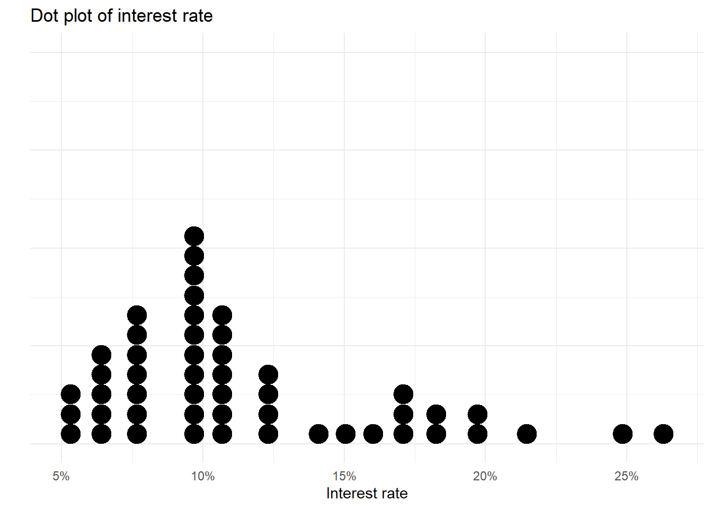
data = loan50-
Dit stukje code zegt dat het dataframe dat we gebruiken
loan50heet. Voor je eigen grafiek zou jeloan50vervangen door de naam van het data.frame dat je gebruikt. mapping = aes(x = interest_rate)-
Dit deel van de code zegt dat
interest_ratede variabele is die we willen weergeven. Voor je eigen grafiek zou je dusinterest_ratevervangen door je eigen variabele. geom_histogram()-
Dit vertelt ggplot2 dat we een histogram willen maken. Dit produceert een basis histogram met 30 bins (zie hieronder voor opties die deze standaardinstelling veranderen).
8.4.1 Histogram: bin-grootte regelen
Er zijn verschillende mogelijkheden om te bepalen hoe de gegevens van de variabele worden gegroepeerd: de breedte van de bins (‘bakken’), het aantal bins of handmatige breekpunten instellen:
8.4.1.1 Breedte van de bins
data(loan50)
ggplot(data = loan50,
mapping = aes(x = interest_rate)) +
geom_histogram(binwidth = 2.5)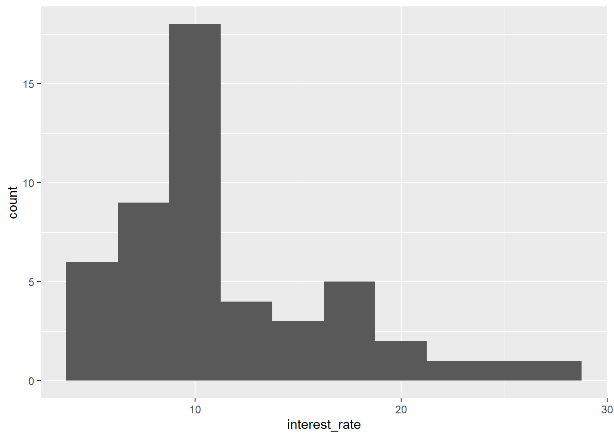
geom_histogram(binwidth = 2.5)-
De optie binwidth stelt de breedte van de bins in, in dit voorbeeld op 2.5.
8.4.1.2 Aantal bins
data(loan50)
ggplot(data = loan50,
mapping = aes(x = interest_rate)) +
geom_histogram(bins = 10)geom_histogram(bins = 10)-
De optie bins stelt het aantal bins in, in dit voorbeeld 10.
8.4.1.3 Handmatige breekpunten
data(loan50)
ggplot(data = loan50,
mapping = aes(x = interest_rate)) +
geom_histogram(breaks=seq(5,27.5,by=2.5))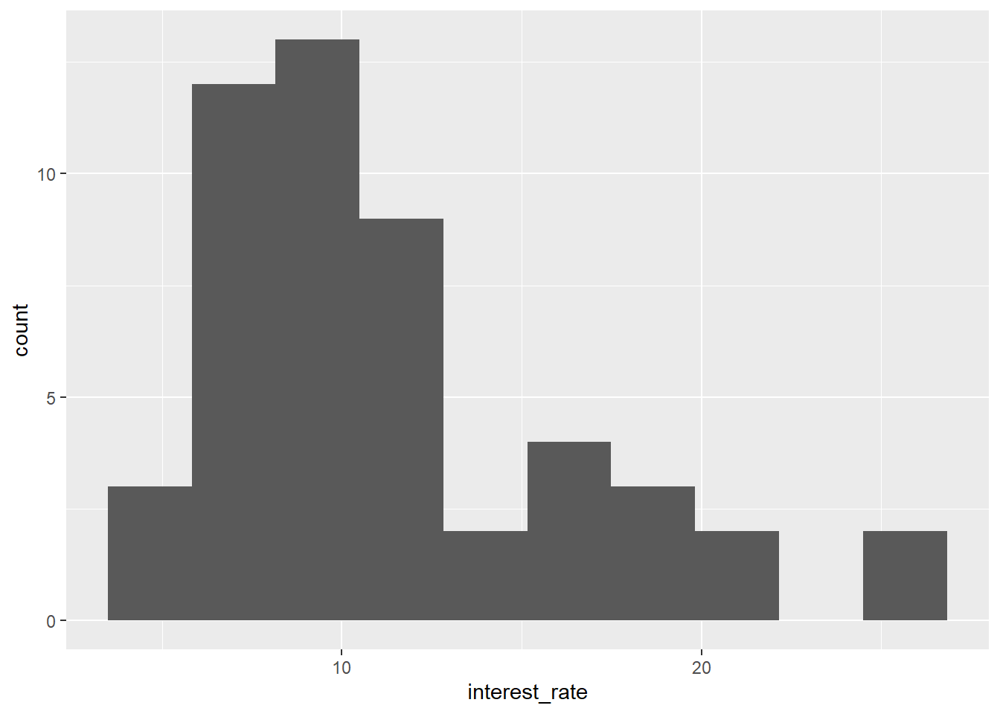
geom_histogram(breaks=seq(5,27.5,by=2.5)-
De optie
breaksstelt exacte breekpunten in voor de bins in de histogrammen. In dit voorbeeld stellen we breekpunten in van 5 tot 27.5 in stappen van 2.5 (d.w.z. de eerste bin is 5-7.5, de tweede 7.5-10, etc.).
8.4.2 Histogram: extra opties
data(loan50)
ggplot(data = loan50,
mapping = aes(x = interest_rate)) +
geom_histogram(breaks=seq(5,27.5,by=2.5), colour = "black", fill="grey") +
labs(title = "Histogram of interest rate",
x = "Interest Rate", y= "Count") +
theme_minimal()
geom_histogram(colour = "black", fill="grey")-
Dit regelt het uiterlijk van de balken. In dit voorbeeld voegen we een zwarte rand toe aan de balk door de
colour(kleur) in te stellen en defill(vulkleur) te veranderen in grijs. labs(title = "Title", x = "x axis title", y = "y axis title")-
Deze optie voegt mooiere namen toe voor de titel van de grafiek, en de titels van de x- en y-as.
theme_minimal()-
Om het uiterlijk van een grafiek te veranderen, kun je de
theme_*functies gebruiken (waarbij je in plaats van ster verschillende opties kunt toevoegen, zoalstheme_minimal(),theme_classic()oftheme_light().
8.5 Box plot
Een boxplot geeft een samenvatting van een variabele, met behulp van vijf statistieken, waaronder de mediaan, Q1 en Q3.
data(loan50)
ggplot(data = loan50,
mapping = aes(x = interest_rate)) +
geom_boxplot()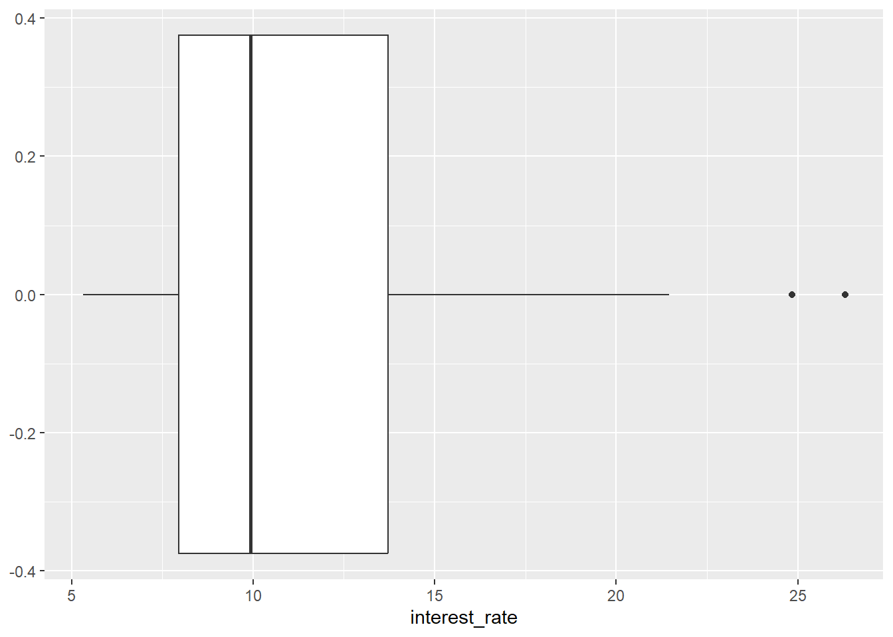
data = loan50-
Dit stukje code zegt dat het dataframe dat we gebruiken
loan50heet. Voor je eigen grafiek zou jeloan50vervangen door de naam van het dataframe dat je gebruikt. mapping = aes(x = interest_rate)-
Dit deel van de code zegt dat
interest_ratede variabele is die we willen weergeven. Voor je eigen grafiek zou je dusinterest_ratevervangen door je eigen variabele. geom_boxplot()-
Dit vertelt ggplot2 dat we een boxplot willen maken. Dit produceert een basis boxplot.
8.5.1 Box plot: extra opties
data(loan50)
ggplot(data = loan50,
mapping = aes(y = interest_rate)) +
geom_boxplot(fill = "grey") +
labs(title = "Boxplot of interest rate",
y = "Interest rate") +
theme_minimal() +
theme(axis.text.x=element_blank(),axis.ticks.x=element_blank())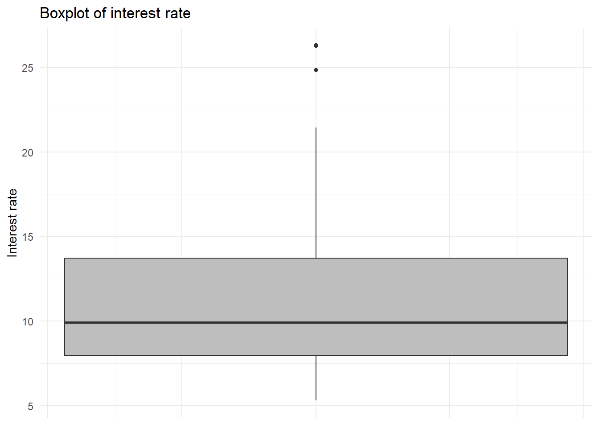
aes(y = interest_rate)-
Als we interest_rate op de y-as zetten (in plaats van op de x-as) veranderen we de oriëntatie van de boxplot.
geom_boxplot(fill = "grey")-
De optie
fillbepaalt de kleur van de vakjes. Merk op dat de kleur tussen aanhalingstekens moet worden opgegeven (dus"grey"). labs(title = "Title", x = "x axis title", y = "y axis title")-
Deze optie voegt mooiere namen toe voor de titel van de grafiek, en de titels van de x- en y-as.
theme_minimal()-
Om het uiterlijk van een grafiek te veranderen, kun je de
theme_*functies gebruiken (waarbij je in plaats van ster verschillende opties kunt toevoegen, zoalstheme_minimal(),theme_classic()oftheme_light(). theme(axis.text.x=element_blank(),axis.ticks.x=element_blank())-
Deze optie zorgt dat op de x as geen labels and ticks weergegeven worden, aangezien deze betekenisloos zijn.
8.5.2 Box plot: meerdere groepen
data(loan50)
ggplot(data = loan50,
mapping = aes(x = interest_rate, y = homeownership)) +
geom_boxplot() 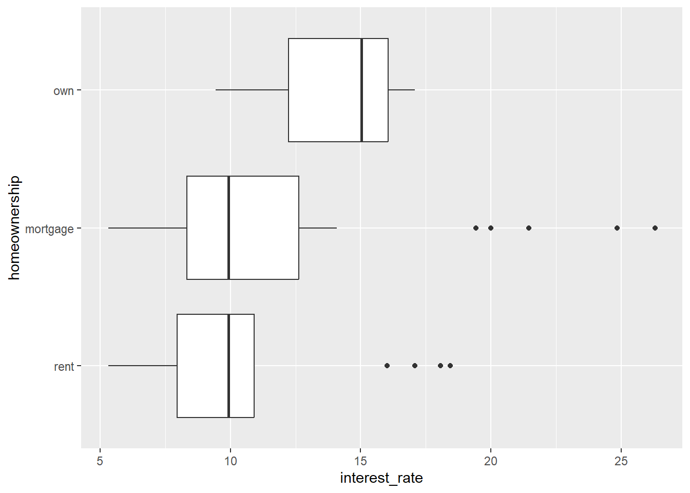
aes(x = interest_rate, y = homeownership)-
In dit voorbeeld geven we de rente (interest rate) weer per type woningbezit (eigen, hypotheek, huur). Hier plaatsen we
interest_rateop de x-as enhomeownershipop de y-as. Merk op dat de tweede variabele (in dit gevalhomeownership) eenfactorofcharactervariabele moet zijn (d.w.z. categoriaal).
8.6 Staafdiagram (Bar plot)
Een staafdiagram kan worden gebruikt om tellingen of proporties van categoriale variabelen weer te geven. U kunt het ook gebruiken om samenvattende statistieken (bv. gemiddelden) voor verschillende groepen weer te geven.
Merk op dat een histogram wordt gebruikt voor de weergave van frequenties van numerieke (interval-ratio) variabelen, terwijl een staafdiagram wordt gebruikt voor de weergave van frequenties van categoriale variabelen.
data(loan50)
ggplot(data = loan50,
mapping = aes(x = homeownership)) +
geom_bar()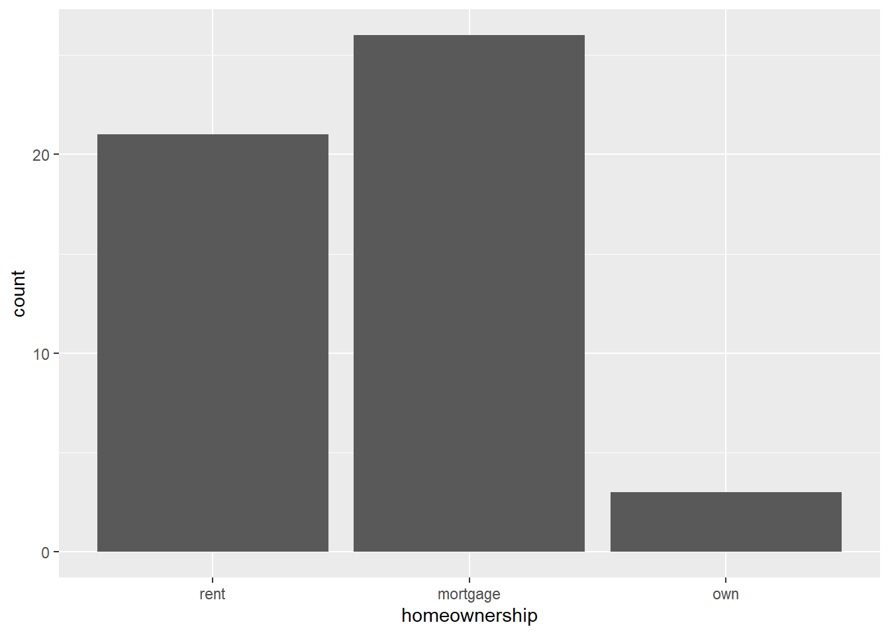
data = loan50-
Dit stukje code zegt dat het dataframe dat we gebruiken
loan50heet. Voor je eigen grafiek zou jeloan50vervangen door de naam van het dataframe dat je gebruikt. mapping = aes(x = homeownership)-
Dit deel van de code zegt dat
homeownershipde variabele is die we willen laten zien. Voor je eigen grafiek, zou je dushomeownershipvervangen door je eigen variabele. geom_bar()-
Dit vertelt ggplot2 dat we een barplot willen maken. Dit produceert een basis barplot.
8.6.1 Bar plot: extra opties
data(loan50)
ggplot(data = loan50,
mapping = aes(x = homeownership)) +
geom_bar(fill = "grey", colour = "black") +
labs(title = "Homeownership",
x = "Home ownership type",
y = "Count") +
theme_minimal()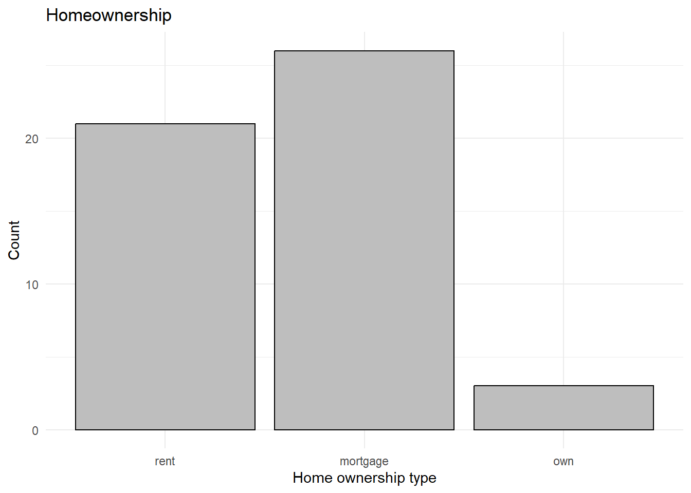
geom_bar(fill = "grey", colour = "black")-
De optie
fillbepaalt de kleur van de balken encolourbepaalt de kleur van de rand. Merk op dat de kleur tussen aanhalingstekens moet worden opgegeven (dus"grey"). labs(title = "Title", x = "x axis title", y = "y axis title")-
Deze optie voegt mooiere namen toe voor de titel van de grafiek, en de titels van de x- en y-as. Opmerking: als je de manier waarop de categorieën worden gepresenteerd wilt veranderen (d.w.z. “Huur” in plaats van “huur”), moet je de variabele
homeownershiphercoderen. theme_minimal()-
Om het uiterlijk van een grafiek te veranderen, kun je de
theme_*functies gebruiken (waarbij je in plaats van ster verschillende opties kunt toevoegen, zoalstheme_minimal(),theme_classic()oftheme_light().
8.6.2 Bar plot: meerdere groepen
Wanneer je twee categoriale variabelen hebt, kun je een staafdiagram maken dat beide variabelen weergeeft. In het onderstaande geval geven we homeownership en verified_income weer.
8.6.2.1 Gestapelde staafdiagram (stacked bar plot)
data(loan50)
ggplot(data = loan50,
mapping = aes(x = homeownership)) +
geom_bar(aes(fill = verified_income))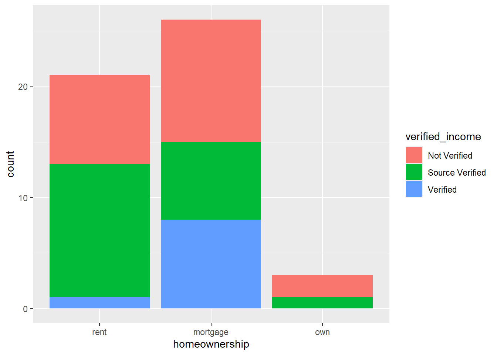
geom_bar(aes(fill = verified_income))-
De optie
fill(binnenaes) geeft aan dat we elke staaf willen onderverdelen naar de categorieën vanverified_income.
Note: als je de labels in de legenda van deze grafiek wilt veranderen, kun je het beste de variabele (verified_income) hernoemen (rename) en hercoderen (recode). Dit behandelen we in de komende weken.
8.6.2.2 Staven naast elkaar
data(loan50)
ggplot(data = loan50,
mapping = aes(x = homeownership)) +
geom_bar(aes(fill = verified_income), position="dodge")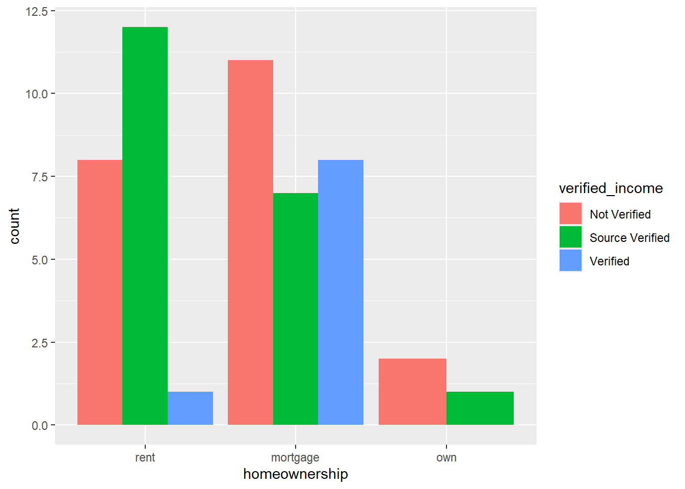
geom_bar(aes(fill = verified_income), position = "dodge")-
De optie
fill(binnenaes) geeft aan dat we elke staaf willen onderverdelen naar de categorieën vanverified_income. We voegenposition = "dodge"toe om de staven naast elkaar weer te geven in plaats van te stapelen.
8.6.2.3 Percentage gestapeld staafdiagram
Dit type staafdiagram stapelt de subcategorieën, maar berekent ze als een percentage.
data(loan50)
ggplot(data = loan50,
mapping = aes(x = homeownership)) +
geom_bar(aes(fill = verified_income), position = "fill") +
scale_y_continuous(labels = label_percent()) +
labs(y = "Percentage")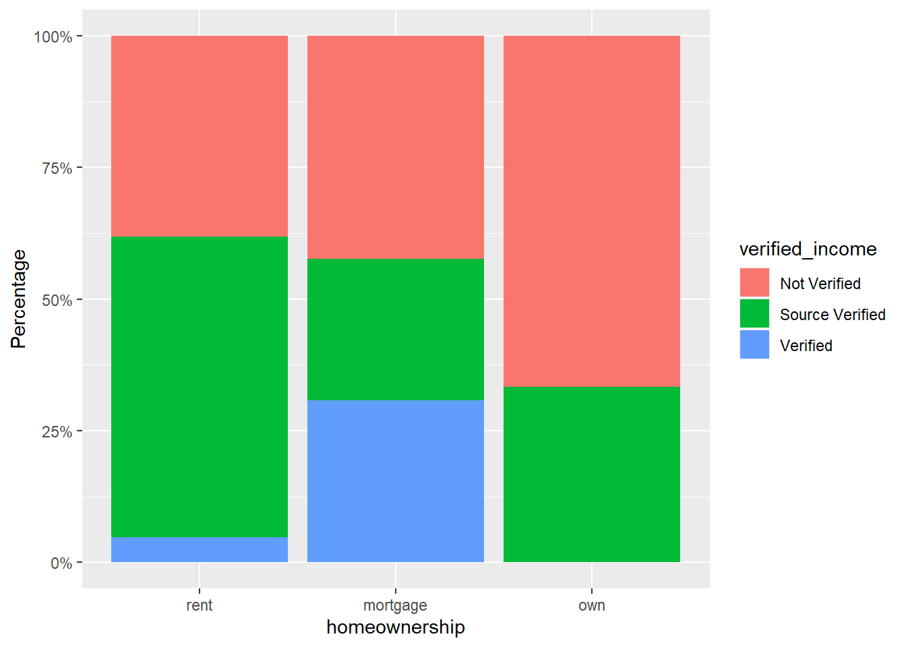
geom_bar(aes(fill = verified_income), position = "fill")-
De optie
fill(binnenaes) geeft aan dat we elke staaf willen onderverdelen naar de categorieën vanverified_income. scale_y_continuous(labels = label_percent())-
Dit zorgt ervoor dat percentages in plaats van aantallen op de y-as worden weergegeven. De functie
label_percent()komt uit packagescales. labs(y = "Percentage")-
Om ervoor te zorgen dat op de y-as “Percentage” staat in plaats van “Counts”, wijzigen we het label van de y-as.
8.6.3 Staafdiagram van gemiddelden
We kunnen ook staafdiagrammen gebruiken om statistieken weer te geven (bijvoorbeeld gemiddelden) van een numerieke variabele voor elke categorie van een categorische variabele. Laten we bijvoorbeeld de gemiddelde interest_rate per type homeownership plotten.
Eerst moeten we een dataframe maken dat de gemiddelde rente per type huiseigendom laat zien. Dit kunnen we doen met group_by en summarise uit het dplyr pakket. We zullen deze functies later in de cursus in meer detail bespreken. Voor nu is het voldoende om te begrijpen dat we de gemiddelde rente voor elk type huizenbezit berekenen:
data(loan50)
loan50_means <- loan50 |>
group_by(homeownership) |>
summarise(interest_rate = mean(interest_rate, na.rm=TRUE))
loan50_means# A tibble: 3 × 2
homeownership interest_rate
<fct> <dbl>
1 rent 10.8
2 mortgage 11.9
3 own 13.9Met dit nieuwe dataframe loan50_means, kunnen we een staafdiagram maken van deze gemiddelden, met geom_col():
ggplot(data = loan50_means,
mapping = aes(x = homeownership, y = interest_rate)) +
geom_col()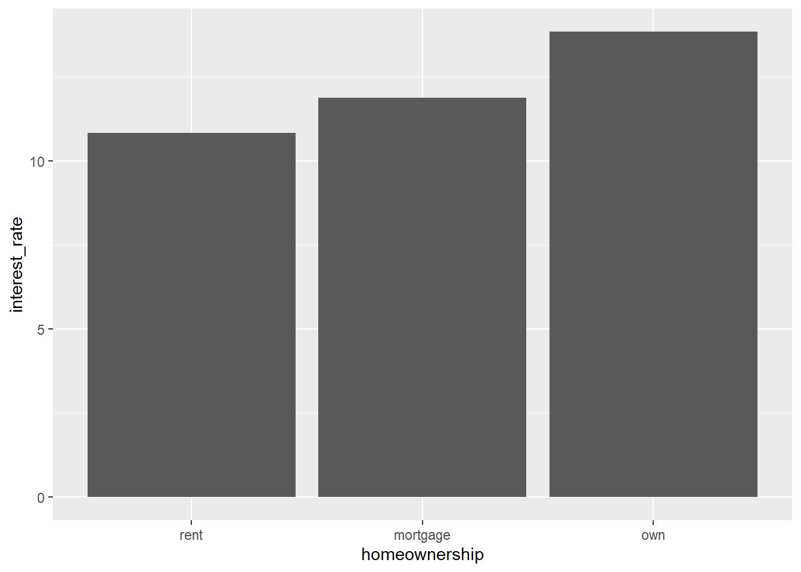
data = loan50_means-
Merk op dat we hier de dataset
loan50_meansgebruiken, die we hierboven hebben gemaakt. Deze bevat de gemiddeldeinterest_rateper typehomeownership. mapping = aes(x = homeownership, y = interest_rate)-
Dit deel van de code geeft de categoriale (x) variabele en de numerieke (y) variabele.
geom_col()-
Dit vertelt ggplot2 dat we een staafdiagram willen maken waar we de waarden van de gegevens willen weergeven (niet de tellingen per groep, zoals met
geom_bar).